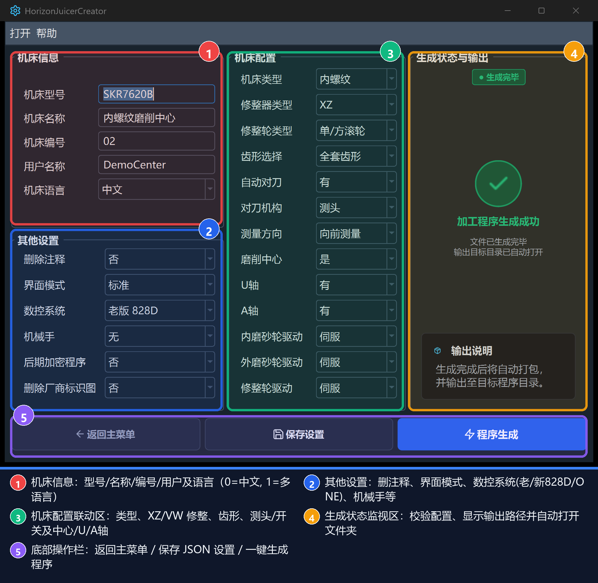

2.2 机床结构、修整器与硬件选配联动
机床配置页面的中间区域决定了 Horizon-Juicer 代码库中全部条件编译标记（;ifIs...）的开关组合。HorizonJuicerCreator 内部通过动态显隐逻辑防止无效组合被误选，图例为内螺纹磨削中心典型配置界面：

1. 机床主体类型与工艺功能选配
关于底层枚举顺序的重要说明：
HorizonJuicerCreator界面下拉框按creatorwindow.ui顺序保存0/1整数索引；其中部分开关以0代表“有/是”（如ifHasScrewTap、ifOperation、ifHasReOp、ifCenter、ifHasU、ifHasA），而另一些以0代表“否/无”（如ifHasWorm、ifHasLoadingArm、ifHasEncryption）。下表严格对应 JSON 与源码真实枚举值：
| 配置项 | JSON 键 & UI 枚举（真实索引） | 联动条件与影响（creatorwindow.cpp + generatepro.cpp） |
|---|---|---|
| 机床类型 | machineType：0 外螺纹 / 1 内螺纹 |
决定核心坐标系、退刀方向、主磨削 Mask（外螺纹 Mask1 / 内螺纹 Mask18）以及对刀模式分支；同时动态隐藏另一机型的专属下拉项。 |
| 是否磨丝锥 | ifHasScrewTap：0 是 / 1 否 |
仅机床类型 = 0 外螺纹时显示。选 0 是 保留 SCREW_TAP 直槽/螺旋槽/跳齿铲磨界面（Mask52）及 B 轴 铲磨控制逻辑。 |
| 磨削中心 | ifCenter：0 是 / 1 不是 |
仅机床类型 = 1 内螺纹时显示。选 0 是 保留复合加工总入口 A_GRIND_CENTER.SPF、看板（a_centermain.com）以及外圆（a_centerwaiyuan.com）、端面（a_centerduanmian.com）全套页面与在线测量模块；选 1 不是 则隐藏外圆 U 轴/外磨砂轮配置。 |
| 是否磨蜗杆 | ifHasWorm：0 否 / 1 是 |
仅当外螺纹且修整器为 0=VW、2=XZ、5=XW、6=UW 时显示。选 1 是 后开放蜗杆模数、压力角、WORM_SHAPE 专用修整与 M 代码安全互锁逻辑。 |
| 二次对刀 | ifHasReOp：0 有 / 1 无 |
仅机床类型 = 0 外螺纹时显示。选 0 有 允许现场在 Mask1 切换 首次对刀 / 二次对刀（C_OPERATION_RAND.SPF）；选 1 无 则强制按首次对刀处理。 |
2. 磨削中心外圆拓展选项（仅 machineType=1 且 ifCenter=0 时可见）
- U 轴（
ifHasU）：0有：设备配有独立U轴承载外圆砂轮架（外圆/端面切入使用U轴）。1无：无独立U轴，外圆砂轮与内磨共用X轴，此时界面动态展开 外圆砂轮位置（ifNotHasUExternalPos）：0后置 /1前置，决定外圆共用轴切入方向及PROCESS[56/57]符号。
- 外磨砂轮驱动（
exGrindWheelType）：0伺服 /1变频器：控制a_setting.comSUB(UP6)中外圆砂轮驱动标记，决定F_GRINDWHEEL_RUN系列子程序输出伺服指令（S.. M..）或变频模拟量参数；与是否选 U 轴同步受ifCenter==0联动显隐。
3. 修整器架构与滚轮/齿形组合联动
不同机型搭载的修整器轴系（wareType 共 7 项索引 0..6）受 机床类型 动态过滤（外螺纹隐藏 5=XW 与 6=UW）：
| 索引 | wareType 名称 |
支持的机床类型 | 修整轮类型（wheelType）与齿形（shapeType）联动规则 |
|---|---|---|---|
0 |
VW（V/W 两轴插补） | 外/内螺纹 | 当 wareType 属于插补系（0=VW / 2=XZ / 5=XW / 6=UW）时：• 显示 修整轮类型： 0 单/方滚轮、1 双滚轮；• 显示 齿形选择： 0 全套齿形（三角/梯形/双圆弧 + 行星齿）、1 双圆弧；• 选 6=UW 时会在工艺 Mask5 及修整画面额外开放 U/W 轴与力矩夹紧挡块控制。 |
1 |
V（单 V 轴成型） | 外/内螺纹 | 纯成型/液压修整器：自动隐藏 是否磨蜗杆、修整轮类型 与 齿形选择 下拉框。 |
2 |
XZ（X/Z 两轴插补） | 外/内螺纹 | 同 0=VW 插补规则（见 creator_config_center.png 示例配置）。 |
3 |
X_Back（单 X 后置成型） | 外/内螺纹 | 自动隐藏插补滚轮与齿形选择。 |
4 |
液压（液压摆缸成型） | 外/内螺纹 | 自动隐藏插补滚轮与齿形选择。 |
5 |
XW（X/W 两轴插补） | 仅内螺纹 | 同 0=VW 插补规则；后置靠修配置须配合源码内方向参数核查。 |
6 |
UW（U/W 两轴插补） | 仅内螺纹 | 同 0=VW 插补规则，额外激活 UW 夹紧力矩逻辑。 |
4. 自动对刀、辅助轴与主轴驱动配置
- 自动对刀（
ifOperation）：0有 /1无：选0有 后保留自动对刀画面（a_auto.com）与C_OPERATION_AUTO.SPF全套自动测量子程序；选1无 则隐藏下方 对刀机构 与 测量方向 下拉框。- 对刀机构（
measureMethord）：0开关（接近开关）、1测头（接触式测头）、2开关和测头。注意界面联动规则：外螺纹（0）隐藏1测头；内螺纹（1）隐藏2开关和测头（内孔侧常配独立接近开关或单测头）。 - 测量方向（
probePos）：0向前测量 /1向后测量（仅当 内螺纹 + 有自动对刀 时显示），决定a_setting.comSUB(UP6)中测头扫描默认初始方向VAR_34（1或-1）。
- A 轴（
ifHasA）：0有 /1无：选0有 开放主磨削画面螺旋升角自动偏转、B_SCREW自动摆角与a_settingA 轴相关参数。
- 磨削砂轮驱动（
grindWheelType/exGrindWheelType）与修整轮驱动（dressWheelType）：- 三者均提供
0伺服 /1变频器 两项枚举；注意在generatepro.cpp与a_setting.comSUB(UP6)中：0=伺服编译;ifIsNotSiFuIn...（输出如M1=3 S1=SPEED指令），1=变频器编译;ifIsSiFuIn...（通过模拟量变量R299=SPEED+M13/M23/M63启停），因此在真机首次部署后 必须执行一次VS3 → Mask2配置重置 才能使该标志写入 NC！
- 三者均提供
5. 保存配置与触发生成
- 点击底部的 保存配置：仅将当前面板所有选项写入
~/HorizonJuicerCreator.json，不触发代码生成。 - 点击右下角 程序生成：先自动校验
源仓库目录、程序生成目录及必填表单项，随后立即保存 JSON 并在后台工作线程执行条件裁剪、拷贝与跨平台替换。生成期间界面进度指示激活，完成后在目标目录产生完整程序包。